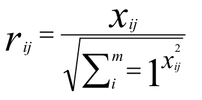
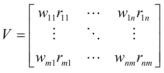
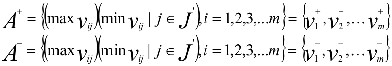
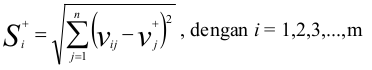
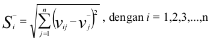
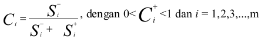
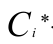

© Copyright 2015
Elemen rij hasil dari normalisasi decision matrix R dengan metode Euclidean length of a vector adalah :
 Rij = hasil dari normalisasi matriks keputusan R
i = 1,2,3,...,m;
j = 1,2,3,...,n;
Dengan bobot W = (w1,w2,....,wn), maka normalisasi bobot matriks V adalah :
Solusi ideal positif dinotasikan dengan A + dan solusi ideal negatif dinotasikan dengan A - , sebagai berikut : Menentukan solusi ideal (+) dan (-)
Dimana :
Vij = elemen matriks V baris ke-i dan kolom ke-j
J = {j=1,2,3,...,n dan j berhubungan dengan benefit criteria}
J' = {j=1,2,3,...,n dan j berhubungan dengan cost criteria}
Separation measure ini merupakan pengukuran jarak dari suatu alternatif ke solusi ideal positif dan solusi ideal negatif. Perhitungan matematisnya adalah sebagai berikut :
Separation measure untuk solusi ideal positif
Dimana :
J= {j=1,2,3,...,n dan j merupakan benefit criteria}
J’ = {j=1,2,3,...,n dan j merupakan cost criteria}
Separation measure untuk solusi ideal negatif
Dimana :
J = {j=1,2,3,...,n dan j merupakan benefit criteria}
J’ = {j=1,2,3,...,n dan j merupakan cost criteria}
Kedekatan relatif dari alternatif A + dengan solusi ideal A - direpresentasikan dengan :
Alternatif dapat diranking berdasarkan urutan
Maka dari itu, alternatif terbaik adalah salah satu yang berjarak terpendek terhadap solusiideal dan berjarak terjauh dengan solusi ideal negatif.
Sistem pendukung keputusan (SPK) atau sering disebut DSS
(Decision Support System) merupakan salah satu cabang
keilmuan di bidang kecerdasan buatan (Artifical Intelligence)
yang merupakan bagian dari sistem informasi berbasis komputer.
Dimana aplikasi komputer tersebut mengeluarkan keputusan untuk
menjadi pertimbangan user atau pemakai. SPK merupakan proses
pemilihan alternatif tindakan untuk mencapai tujuan atau sasaran tertentu.
Pengambilan keputusan dilakukan dengan pendekatan sistematis terhadap
permasalahan melalui proses pengumpulan data menjadi informasi
serta ditambah dengan faktor-faktor yang perlu dipertimbangkan
dalam pengambilan keputusan.
Metode yang dipakai dalam sistem pendukung
keputusan pemilihan laptop ini adalah Technique For
Order Preference by Similarity to Ideal Solution
(TOPSIS). TOPSIS merupakan suatu bentuk metode
pendukung keputusan yang didasarkan pada konsep
bahwa alternatif yang terbaik tidak hanya memiliki
jarak terpendek dari solusi ideal positif tetapi juga
memiliki jarak terpanjang dari solusi ideal negatif
yang dalam hal ini akan memberikan rekomendasi
pemilihan laptop yang sesuai dengan yang diharapkan.
Konsep ini banyak digunakan untuk menyelesaikan
masalah keputusan secara praktis. Konsepnya
sederhana dan mudah dipahami, komputasinya efisien
dan memiliki kemampuan untuk mengukur kinerja
relatif dari alternatif-alternatif keputusan dalam bentuk
matematis yang sederhana (Kusumadewi, 2006).
Konsep fundamental dari metode ini adalah penentuan
dari jarak Euclide terpendek dari solusi ideal positif dan jarak
Sistem pendukung keputusan pemilihan laptop
dengan metode TOPSIS ini dipilih karena mampu
memilih alternatif terbaik dari sejumlah alternatif.
Dalam hal ini alternatif yang dimaksud adalah laptop
terbaik berdasarkan kriteria-kriteria yang ditentukan
dengan langkah-langkah metode TOPSIS yang
sederhana, mudah dipahami, efektif dan efisien. Hasil
dari proses pengimplementasian metode TOPSIS ini
dapat mengurutkan alternatif dari nilai yang terbesar
ke nilai yang terkecil, sehingga diharapkan laptop
yang direkomendasikan benar-benar sesuai dengan
keinginan, kebutuhan, dan kemampuan konsumen.